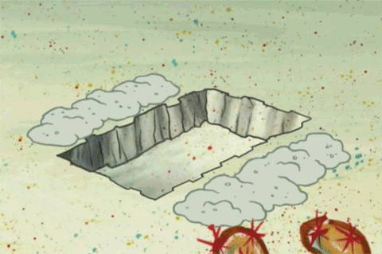
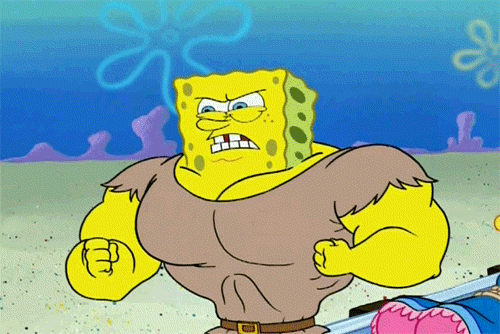
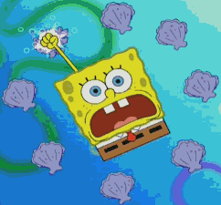

Haha, shame on myself. I didn’t write any blog in the past four months!
Let me conclude my quarantine life:
- March: Wow!! I’m soooo happy, I don’t need to go to school now. I can read those novels which I don’t have time to read, watch Korean dramas, play computer games. Let me enjoy my long vocation, next month I don’t have a chance to do that.
- April: Wait… the vocation looks longer than I imagine. When will it end? I kind of getting tried of dramas, novels, and games. I want to go outside to eat, to see my friends. And I need to present my capstone next month and I didn’t work hard last month. OMG, I want to go back to normal life. 
- May: Well, I already get used to quarantine lifestyle. Even though I don’t need to face my professor, I still need to finish my projects, find an internship. Especially I need to be more self-controlled, trying to learn more things before graduation. It’s a period full of challenges and chances. 
- June: It’s so hard to find an intern right now. And I need to learn so many new things. React, Node, SASS… wow, even busier than at school. But I will try my best to work hard! 